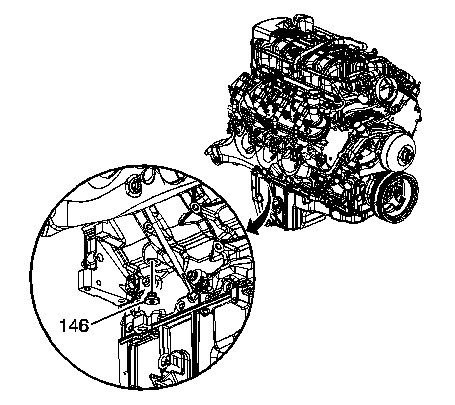
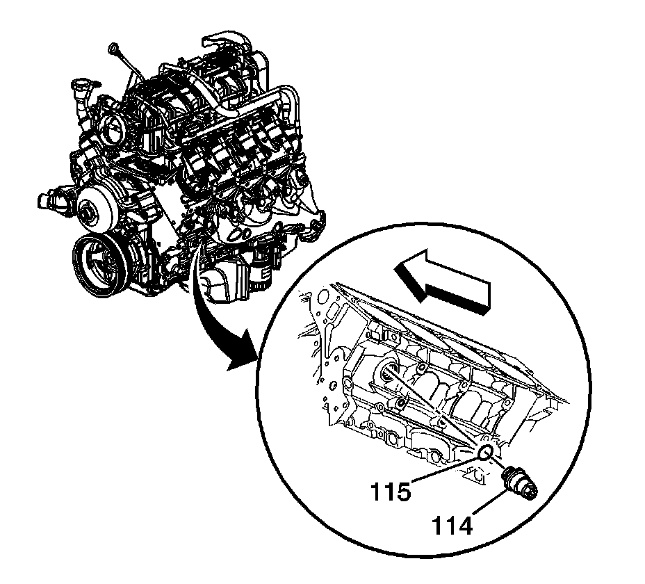

1. Draining Fluids and Oil Filter Removal
Draining Fluids and Oil Filter Removal

1. Remove the oil pan drain plug (430) and O-ring (429).

2. Remove the engine oil filter (437).

3. Remove the right side engine block coolant drain hole plug (146).

4. Remove the left side engine block coolant heater (114) and washer (115).